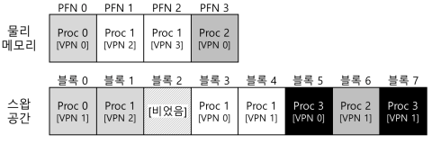
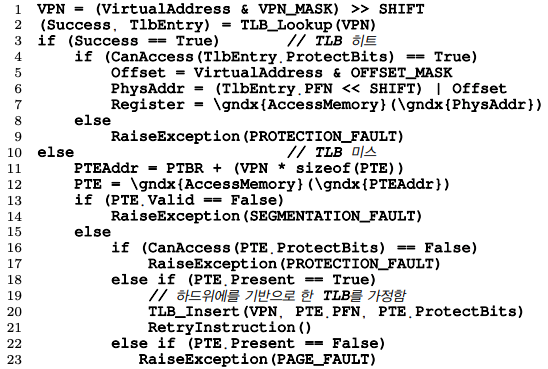
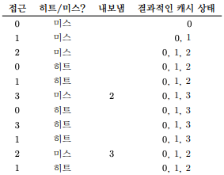
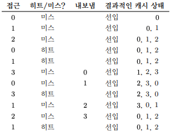
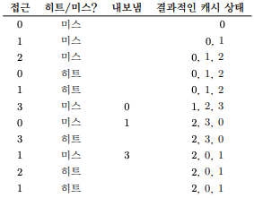
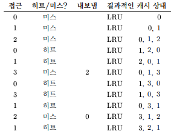
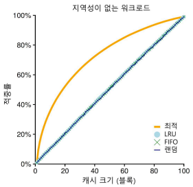
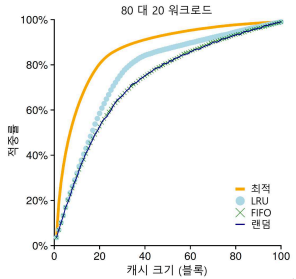
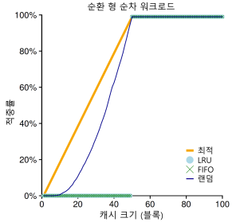

1. 물리 메모리 크기의 극복: 메커니즘
- 큰 주소 공간을 지원하기 위해서 운영체제는 주소 공간 중에 현재는 크게 필요하지 않은 일부를 보관해 둘 공간이 필요하다.
- 현대 시스템에서는 보통 하드 디스크 드라이브가 이 역할을 담당한다.
- 왜 프로세스에게 굳이 “큰” 주소 공간을 제공해야하는가이다.
- 이에 대한 답은 다시 한번 편리함과 사용 용이성이다.
- 주소 공간이 충분히 크면, 프로그램의 자료 구조들을 위한 충분한 메모리 공간이 있는지 걱정핮 ㅣ않아도 된다.
- 필요 시 메모리 할당을 운영체제에게 요청하기만 하면 된다.
- 스왑 공간이 추가되면 운영체제는 실행되는 각 프로세스들에게 큰 가상 메모리가 있는 것 같은 환상을 줄 수 있다.
- 멀티프로그래밍 시스템이 발명되면서 많은 프로세스들의 페이지를 물리 메모리에 전부 저장하는 것이 불가능하게 되었다.
- 그래서 일부 페이지들을 스왑 아웃하는 기능이 필요하게 되었다.
1.1 스왑 공간
- 디스크에 페이지들을 저장할 수 있는 일정 공간을 확보하는 것이다.
- 이 용도의 공간을 스왑 공간(swap space)라고 한다.
- 운영체제는 스왑 공간에 있는 모든 페이지들의 디스크 주소를 기억해야 한다.
- 스왑 공간의 크기는 매우 중요하다.
- 시스템이 사용할 수 있는 메모리 페이지의 최대수를 결정하기 때문이다.

- 위의 긞은 물리 메모리와 스왑 공간이다.
- Proc3은 사용되고 있지 않다.
1.2 Present Bit
- 메모리가 참조되는 과정
- 프로세스가 가상 메모리 참조를 생성한다(명령어 탑재나 데이터 접근등).
- 하드웨어는 메모리에서 원하는 데이터를 가져오기 전에, 우선 가상 주소를 물리 주소로 변환한다.
- TLB Hit 하면 TLB에서 물리 주소를 얻은 후에 메모리로 가져온다.
- TLB Miss 하면 하드웨어는 페이지 테이블의 메모리 주소를 파악하고(페이지 테이블 베이스 레지스터를 사용), VPN을 인덱스로 하여 원하는 페이지 테이블 항목(PTE)을 추출한다.
- 해당 페이지 테이블 항목이 유효하고 관련 페이지가 물리 메모리에 존재한다면 하드웨어는 PTE에서 PFN 정보를 추출하고 그 정보를 TLB에 탑재한다.
- TLB 탑재 후 명령어를 재실행한다.
- 페이지가 디스크로 스왑되는 것을 가능케 하려면, 많은 기법이 추가되어야 한다.
- 하드웨어가 PTE에서 해당 페이지가 물리 메모리에 존재하지 않는다는 것을 표현 해야 한다.
- present bit을 사용하여 각 페이지 테이블 항목에 어떤 페이지가 존재하는지를 표현한다.
- present bit이 1로 설정 되어 있다면, 물리 메모리에 해당 페이지가 존재한다.
- present bit이 0으로 설저오디어 있다면, 물리 메모리에 존재하지 않고 디스크에 존재한다는 것을 나타낸다.
- 물리 메모리에 존재하지 않는 페이지를 접근하는 행위를 일반적으로 페이지 폴트(page fault)라 한다.
- 페이지 폴트가 발생하면, 페이지 폴트를 처리하기 위해 운영체제로 제어권이 넘어가 페이지 폴트 핸들러(page-fault handler)가 실행된다.
1.3 페이지 폴트
- 페이지 폴트가 발생하면 운영체제가 그 처리를 담당한다.
- 운영체제의 페이지 폴트 핸들러가 그 처리 메커니즘을 규정한다.
- 만약 요청된 페이지가 메모리에 없고, 디스크로 스왑되었다면, 운영체제는 해당 페이지를 메모리로 스왑해 온다.
- 많은 시스템들에서 해당 정보를 페이지 테이블에 저장한다.
- 페이지 폴트 발생 시, 운영체제는 페이지 테이블 항목에서 해당 페이지의 디스크 상 위치를 파악하여, 메모리로 탑재한다.
1.4 메모리에 빈 공간이 없으면?
- 메모리에 여유 공간이 없다면 탑재하고자 하는 새로운 페이지들을 위한 공간을 확보하기 위해 하나 또는 그 이상의 페이지들을 먼저 페이지 아웃(page out)하려고 할 수도 있다.
- 교체(replace) 페이지를 선택하는 것을 페이지 교체 정책(page-replacement policy)이라고 한다.
1.5 페이지 폴트의 처리

- 위의 코드를 보면 TLB 미스 발생시, 세 가지의 중요한 경우가 있다는 것을 알 수 있다.
- 페이지가 존재하며 유효한 경우다.
- TLB 미스 핸들러가 PTE에서 PFN을 가져와서 명령어를 재시도 한다.
- 페이지가 유효하지만 존재하지 않는 경우다.
- 페이지 폴트 핸들러가 반드시 실행되어야 한다.(물리 메모리에 존재하지 않고 디스크 상에 존재하는 경우다.)
- 페이지가 유효하지 않는 경우다.
- 하드웨어는 이 무효한 접근이 운영체제의 트랩 핸들러에 의해서 처리되도록 한다.
- 페이지가 존재하며 유효한 경우다.
1.6 교체는 실제 언제 일어나는가
- 메모리에 항상 어느 정도의 여유 공간을 비워두기 위해서, 대부분의 운영체제들은 여유 공간에 관련된 최댓값(high watermark, HW)과 최솟값(low watermark, LW)을 설정하여 교체 알고리즘 작동에 활용한다.
- 동작 방법은 다음과 같다.
- 운영체제가 공간의 크기가 최솟값보다 작아지면 여유 공간 확보를 담당하는 백그라운드 쓰레드가 실행된다.
- 이 쓰레드는 여유 공간의 크기가 최댓값에 이를 때까지 페이지를 제거한다.
- 이 백그라운드 쓰레드는 일반적으로 스왑 데몬(swap daemon) 또는 페이지 데몬(page daemon)이라고 불린다.
- 일시에 여러 개를 교체하면 성능 개선이 가능하다.
- 많은 시스템들은 다수의 페이지들을 클러스터(cluster)나 그룹(group)으로 묶어서 한번에 스왑 파티션에 저장함으로써 디스크의 효율을 높인다.
1.7 요약
- 시스템에 실제 존재하는 물리 메모리의 크기보다 더 많은 메모리를 사용하기 위한 개념을 소개하였다.
- 메모리에 특정 페이지가 존재하는지를 알리기 위한 present bit와 좀 더 복잡한 페이지 테이블 구조가 필요하다.
- 운영체제는 페이지 폴트(page fault)를 처리하기 위해서 페이지 폴트 핸들러(page-fault handler)를 실행시킨다.
- 핸들러는 원하는 페이지를 디스크에서 메모리로 전송하기 위해 메모리의 일부 페이지들을 먼저 교체하여 새롭게 스왑되서 들어올 페이지를 위한 공간을 만드는 조치를 취한다.
2. 물리 메모리 크기의 극복: 정책
- 빈 메모리 공간이 거의 없으면 일이 더 복잡해진다.
- 그런 경우 운영체제는 메모리 압박(memory pressure)을 해소하기 위해 다른 페이지들을 강제적으로 페이징 아웃(paging out)하여 활발히 사용 중인 페이지들을 위한 공간을 확보한다.
- 내보낼(evict) 페이지(또는 페이지들) 선택은 운영체제의 교체 정책(replacement policy)안에 집약되어 있다.
2.1 캐시 관리
- 시스템의 전체 페이지들 중 일부분만이 메인 메모리에 유지된다는 것을 가정하면, 메인 메모리는 시스템의 가상 메모리 페이지를 가져다 놓기 위한 캐시로 생각될 수 있다.
- 이 캐시를 위한 교체 정책의 목표는 캐시 미스의 횟수를 최소화하는 것이다.
평균 메모리 접근 시간(average memory access time, AMAT)
- 앞으로 나올 페이지 교체 정책을 평균 메모리 접근 시간을 통해서 비교할 것이다.
- 캐시 히트와 미스의 횟수를 안다면 프로그램의 평균 메모리 접근 시간을 계산할 수 있다.
- AMAT 는 다음과 같은 식으로 계싼할 수가 있다.
- AMAT = Tm + (Pmiss * Td)
- Tm: 메모리 접근 비용
- Td: 디스크 접근 비용
- Pmiss: 캐시미스 확률(0.0~1.0)
2.2 최적 교체 정책
- 교체 정책의 동작 방식을 잘 이해하기 위해서 최적 교체 정책(The Optimal Replacement Policy)과 비교하는 것이 좋다.
- 최적 교체 정책은 미스를 최소화한다.
- 가장 나중에 접근될 페이지를 교체하는 것이 최적이며, 가장 적은 횟수의 미스를 발생시킨다는 것이 증명되었다.

- 위의 그림은 최적의 교체 정책의 흐름이다.
- 캐시는 처음에 비어 있는 상태로 시작하기 때문에 첫 세 번의 접근은 미스이다.
- 이러한 종류의 미스는 최초 시작 미스(cold-start miss) 또는 강제 미스(compulsory miss)라고 한다.
2.3 간단한 정책: FIFO
- FIFO(먼저 들어온 것이 먼저 나간다, 선입선출) 교체 방식을 사용하였다.
- FIFO는 매우 구현하기 쉽다는 장점을 가진다.
- 최적의 경우와 비교하면 FIFO는 눈에 띄게 성능이 안좋다.
- FIFO는 블럭들의 중요도를 판단할 수가 없다.

- 위의 그림은 FIFO 정책의 흐름
2.4 또 다른 간단한 정책: 무작위 선택
- 또 다른 유사한 교체 정책은 무작위 방식이다.
- 메모리 압박이 있을 때 페이지를 무작위로 선택하여 교체한다.
- 때로는 매우 좋은 성능을 보이며 때로는 최악의 성능을 보여준다.

- 위의 그림은 무작위 선택 정책의 흐름
2.5 과거 정보의 사용: LRU
- 불행하게도 FIFO 또는 무작위 선택 방식처럼 단순한 정책들은 중요한 페이지들을 혹은 바로 다시 참조하게 될 것들을 내보낼 수 있다는 비슷한 문제를 겪는다.
- 스케줄링 정책에서와 같이 미래에 대한 예측을 위해서 과거 사용 이력을 활용한 기법이다.
- 페이지 교체 정책이 활용할 수 있는 과거 정보 중 하나는 빈도수(frequency)이다.
- 좀 더 자주 사용되는 페이지의 특징은 접근의 최근성(recency)이다.
- 이러한 류의 정책은 지역성의 원칙(principle of locality)라고 부르는 특성에 기반을 둔다.
- 그리하여 과거 이력에 기반한 교체 알고리즘 부류가 탄생하게 되었다.
- Least-Frequently-Used(LFU) 정책은 가장 적은 빈도로 사용된 페이지를 교체한다.
- Least-Recently-Used(LRU) 정책은 가장 오래 전에 사용된 페이지를 교체한다.

- 위의 그림은 LRU 정책의 흐름이다.
2.6 워크로드에 따른 성능 비교

- 위의 그림은 지역성이 없는 워크로드

-
위의 그림은 지역성(80대20) 워크로드
-
지역성의 여부에 따라 워크로드의 효율성이 차이가 난다.
- 특히 LRU나 FIFO는 “순차 반복” 워크로드에서 거의 최악의 효율을 보여준다.
- 순차반복: 0,1,2 ~ 50 -> 0,1,2 ~ 50…

- 위의 그림은 순환 형 워크로드이다.
2.7 과거 이력 기반 알고리즘의 구현
- 위의 효율이 나빠지는 문제들을 해결하기 위한 방법은 약간의 하드웨어 지원을 받는 것이다.
- 예를들어 페이지 접근이 있을 때마다 하드웨어가 메모리의 시간 필드를 갱신하도록 할 수 있다.
2.8 LRU 정책 근사하기
- LRU는 가장 오래 전에 사용된 페이지를 탐색하는데 많은 비용을 사용한다.
- 그렇기 때문에 LRU를 “근사” 하는 식으로 만들면 구현이 훨씬 쉬워진다.
- 이 개념에는 use bit(때로는 reference bit 라고도 불린다)라고 하는 약간의 하드웨어 지원이 필요하다.
- 페이지가 참조될 때마다(즉, 읽히거나 기록되면) 하드웨어에 의해서 use bit가 1로 설정된다.
- 하드웨어는 이 비트를 절대로 지우지 않는다.
- 0으로 바꾸는 것은 운영체제의 몫이다.
- 운영체제가 LRU에 가깝게 구현하기 위해서 use bit를 활용하는 방법은 시계 알고리즘(clock algorithm)이다.
- 운영체제는 현재 바늘이 가리키고 있는 페이지 P의 use bit가 1인지 0인지 검사한다.
- 만약 1이라면 페이지 P는 최근에 사요되었으며 바람직한 교체 대상이 아니라는 것을 뜻한다.
- P의 use bit은 0으로 설정되고 시계 바늘은 다음 페이지 P+1로 이동한다.
- 알고리즘은 use bit가 0으로 설정되어 있는, 즉 최근에 사용된 적이 없는, 페이지를 찾을 때까지 반복된다.
2.9 갱신된 페이지(Dirty Page)의 고려
- 운영체제가 교체 대상을 선택할 때 메모리에 탑재된 이후에 변경되었는지를 추가적으로 고려하는 것이다.
- 어떤 페이지가 변경(modified)되어 더티(dirty) 상태가 되었다면, 그 페이지를 내보내기 위해서는 디스크에 변경 내용을 기록해야 하기 때문에 비싼 비용을 지불해야한다.
- VM 시스템들은 더티 페이지 대신 깨끗한 페이지를 내보내는 것을 선호한다.
- 이와 같은 동작을 지원하기 위해서 하드웨어는 modified bit(더티 비트)를 포함해야 한다.
- 예를들어, 시계 알고리즘은 교체 대상을 선택할 때 사용되지 않은 상태이고 깨끗한, 두 조건을 모두 만족하는 페이지를 먼저 찾도록 수정된다.
2.10 다른 VM 정책들
- 페이지 선택
- 운영체제는 언제 페이지를 메모리로 불러들일지 결정해야한다.
- 이러한 정책을 페이지 선택(page selection) 정책이라고 불린다.
- 요구 페이징(demanding paging)
- 운영체제는 대부분의 페이지를 읽어 들일 때 요구 페이징 정책을 사용한다.
- 이 정책은 말 그대로 “요청된 후 즉시”, 즉 페이지가 실제로 접근될 때 운영체제가 해당 페이지를 메모리로 읽어 들인다.
- 운영체제가 변경된 페이지를 디스크에 반영하는 데 관련된 방식의 정책
- 많은 시스템은 기록해야 할 페이지들을 메모리에 모은 후, 한번에 (더 효율적으로) 디스크에 기록한다.
- 위와 같은 동작을 클러스터링(clustering) 또는 단순하게 쓰기 모으기(grouping of writes)라고 부른다.
2.11 쓰래싱(Thrashing)
- 시스템이 끊임없이 페이징을 할 수 밖에 없는 상황을 쓰래싱(thrashing)이라고 부른다.
- 쓰래싱 해결 기법
- 다수의 프로세스가 존재할 때, 일부 프로세스의 실행을 중지시킨다.
- 메모리 요구가 초과되면 메모리 부족 킬러(out-of-memory killer)를 실행시켜 많은 메모리를 요구하는 프로세스를 골라 죽인다.